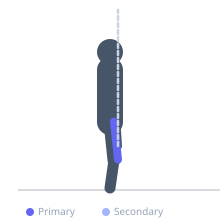

Exercise guide / Terminal Knee Extension — Fast Release
Terminal Knee Extension — Fast Release
A speed-focused variation of the terminal knee extension (TKE) that trains the quadriceps eccentric braking capacity. After performing the standard TKE knee extension against the band, the exerciser releases the hold quickly and allows the band to pull the knee back into flexion faster than the standard controlled return. The quadriceps must react and control this rapid eccentric loading, training the neuromuscular reflex required for activities like landing, deceleration, and cutting. Used in late-stage ACL and knee rehabilitation.
Primary muscles
rectus femoris
vastus lateralis
vastus medialis
Secondary muscles
Stabilizers
gluteus maximus
Equipment
Resistance Band (Loop / Mini Band)
Optional
Resistance Band (Tube with Handles)


Starting position
- Stand facing away from a resistance band anchor with the band looped around the back of the knee. Slight forward lean with a soft knee bend (approximately 20-30 degrees of knee flexion).
Setup
- Anchor the band behind the knee at approximately waist height. Use a band resistance that is challenging but allows controlled movement. Stand close enough to the anchor that the band creates meaningful tension at the starting position.
Steps
- Step 1: Begin with the knee in slight flexion against the band's pull.
- Step 2: Extend the knee to full extension (or near full extension), contracting the quadriceps.
- Step 3: Hold briefly at full extension.
- Step 4: Intentionally release the quadriceps contraction more quickly than normal and allow the band to pull the knee back into flexion. Control the return with eccentric quadriceps activation — allow it, but do not let the knee snap back uncontrolled.
Coaching cues
- Let the band pull back but actively control it — your quadriceps must work eccentrically
- Think of this as catching the knee as it snaps back, not bracing against it
- This should feel like reactive training, not like a strength exercise
Breathing
- Exhale as you extend the knee. Inhale as you control the band-assisted fast return.
Range of motion
- Full extension to approximately 30 degrees of flexion on the return. The speed of the return is controlled — faster than a standard TKE but not fully uncontrolled.
Tempo
- 1s extension, 0.5s hold, fast controlled return (0.5-1s band pull back). The return is intentionally reactive.
Common mistakes
- Allowing the knee to snap back completely uncontrolled — the eccentric must still be active
- Releasing too fast before adequate rehabilitation readiness — this is a late-stage drill
- Losing upright posture during the drill
Safety
- Appropriate only in late-stage rehabilitation when pain-free and cleared by a physiotherapist for reactive training
- Ensure the band anchor is secure before performing the fast release component
Training
- strength: 8–15 reps
- endurance: 10–20 reps
- strength: 2–3 sets
- endurance: 2–3 sets
- Rest: {'strength': 60, 'endurance': 45}